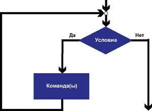
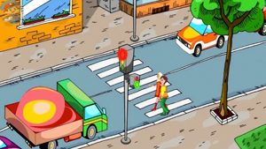
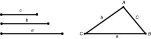
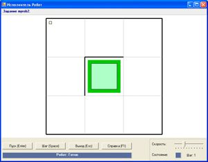
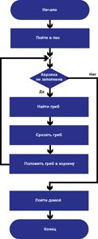
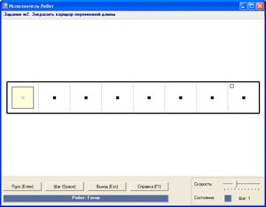
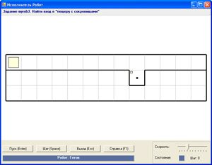
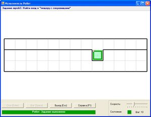

11.1. Понятие условия
В жизни человека принятие решений зачастую зависит от различных условий. Если на улице идет дождь, то нужно взять с собой зонтик; если хорошо подготовился к уроку, то получишь высокую отметку, иначе низкую; пока не выполнил домашнее задание, не будешь развлекаться и др.
Человек способен понимать условия, сформулированные в произвольной форме. Но для того чтобы Робот или другой исполнитель мог принимать решения, нужно «научить» его «понимать» условия.
Условием для исполнителя является понятное исполнителю высказывание, которое может быть истинным (соблюдаться) либо быть ложным (не соблюдаться).
Исполнитель может проверить истинность условий, входящих в его систему условий.
Рассмотрим систему условий для учебного компьютерного исполнителя Робот.
|
WallFromLeft |
Истинно, если слева от Робота стена |
|
WallFromRight |
Истинно, если справа от Робота стена |
|
WallFromUp |
Истинно, если сверху от Робота стена |
|
WallFromDown |
Истинно, если снизу от Робота стена |
|
FreeFromLeft |
Истинно, если слева от Робота свободно |
|
FreeFromRight |
Истинно, если справа от Робота свободно |
|
FreeFromUp |
Истинно, если сверху от Робота свободно |
|
FreeFromDown |
Истинно, если снизу от Робота свободно |
|
CellIsPainted |
Истинно, если ячейка, в которой находится Робот, закрашена |
|
CellIsFree |
Истинно, если ячейка, в которой находится Робот, не закрашена |
Образцы истинных и ложных условий для исполнителя Робот представлены в примере 11.1.
11.2. Цикл с предусловием
Цикл с параметром используется при составлении алгоритма в том случае, когда заранее известно количество повторений. Однако часто до выполнения цикла количество повторений не известно.
Пример 11.2. Вы с родителями пошли в лес собирать грибы. Ваши действия можно описать командами: найти гриб, срезать гриб, положить гриб в корзину. Эти действия будут выполняться в цикле, но вы заранее не знаете, сколько грибов поместится в корзину. Поэтому следует говорить не о количестве повторений (количестве грибов), а об условии, при котором вы будете продолжать сбор грибов: пока корзина не заполнена.
Алгоритмическая конструкция цикл с предусловием (цикл «пока») — способ организации цикла, при котором количество выполнений команд тела цикла зависит от истинности или ложности условия цикла.
Цикл с предусловием используется в том случае, когда количество повторений тела цикла заранее не известно, но известно условие продолжения работы.
Условие цикла определяет, как долго будет выполняться цикл. Пока условие истинно, выполняются команды, составляющие тело цикла. Цикл прекращает выполняться тогда, когда условие становится ложным. Цикл с предусловием имеет такое название, поскольку проверка условия предваряет выполнение команд тела цикла.
Алгоритмическая конструкция цикла с предусловием может изображаться на блок-схеме следующим образом:

В данной конструкции в прямоугольнике(ах) записываются повторяющиеся команды алгоритма (тело цикла), которые совершаются, пока верно условие (Да). При этом после каждого выполнения команд тела цикла происходит проверка, истинно ли условие. Как только условие станет ложным (Нет), цикл завершается. Если условие сразу ложно, то цикл не выполнится ни разу.
Если условие в цикле будет всегда истинно (всегда Да), то такой цикл не сможет завершиться. Возникшую ситуацию называют зацикливанием.
Для записи цикла с предусловием используется команда while. Формат записи команды следующий:
while <условие> do
begin
тело цикла;
end;
Строка while <условие> do является заголовком цикла. Эту строку можно прочитать следующим образом: «Пока верно условие, делай». Команды begin и end; в данном случае играют роль операторных скобок.
Пример 11.3. Напишем программу для решения задачи w2 из встроенного задачника.
Робот должен закрасить коридор переменной длины.
В данной задаче нам не известна длина коридора, но известно, что Робот может двигаться, пока справа пусто, и закрашивать клетки:
Пока справа пусто, повторять
закрасить;
вправо.
После прохода всего коридора Робот должен закрасить последнюю клетку. Это действие происходит после выполнения цикла, так как для последней клетки условие «справа пусто» уже не выполняется.
Пример 11.4. Напишем программу для решения следующей задачи. Робот находится в верхнем левом углу поля. Снизу от Робота вдоль всего поля расположена горизонтальная линия с проходом в одну клетку. Составить алгоритм, выполнив который Робот сможет пройти через проход и закрасить клетку. Расположение прохода заранее не известно.
Мы знаем, что проход не ограничен стеной снизу. Робот может двигаться вправо до тех пор, пока внизу есть стена:
Пока снизу стена, повторять
вправо.
Робот остановится в той клетке, у которой снизу нет стены. После этого Робот должен сдвинуться вниз и закрасить клетку.
|
Примеры
использования А. Правила дорожного движения Если горит зеленый свет, можно переходить улицу.  Б. Фольклор Выбор пути сказочными героями. В. Васнецов. «Витязь на распутье». 1882 г. В. Математика Треугольник существует, если для большей стороны a выполняется неравенство a < b + c .  |
|
Пример 11.1. Рассмотрим начальную обстановку поля Робота:  Для Робота будут истинны следующие условия: WallFromLeft WallFromUp FreeFromRight FreeFromDown CellIsPainted Ложными будут условия : WallFromRight WallFromDown FreeFromLeft FreeFromUp CellIsFree |
|
Пример 11.2. Сбор грибов. Использование цикла с параметром при составлении алгоритма решения этой задачи может привести к разным результатам. Корзина может быть полупустой, или не все найденные грибы в нее поместятся. Если использовать цикл с предусловием, то в результате домой можно унести полную корзину грибов.  Российский академик Андрей Андреевич Марков (младший) (1903—1979) в своих исследованиях в области теории алгоритмов показал, что в общем случае алгоритмы должны содержать предписания двух видов:
 Если применить вышесказанное к компьютерным исполнителям, то предписания первого вида составляют систему команд исполнителя, а предписания второго вида — систему условий исполнителя. Пример 11.3. Одна из возможных начальных обстановок: Программа для исполнителя Робот:
Пример 11.4. Одна из возможных начальных обстановок:  Программа для исполнителя Робот:
_________________  |

1 Что понимают под условием для исполнителя?
2 Выберите из списка условия проверки наличия стены для компьютерного исполнителя Робот
3 Выберите из списка условия проверки отсутствия стены для компьютерного исполнителя Робот
4 Когда используется цикл с предусловием?
5 В какой случае возникает ситуация зацикливания?